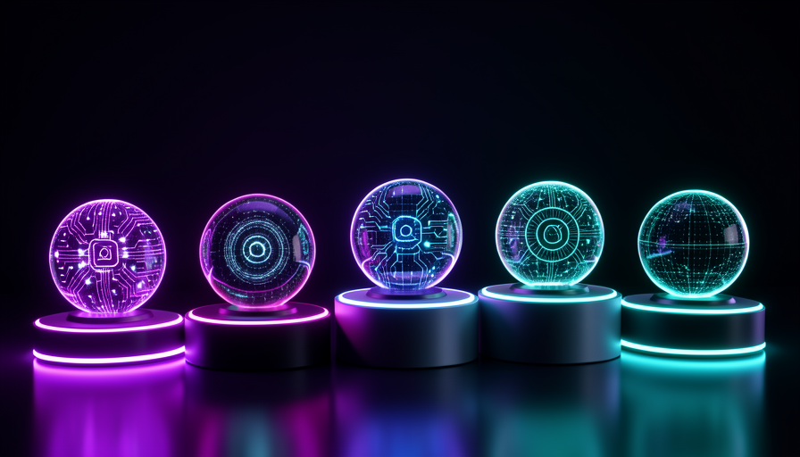

💡 Novo aqui? Três palavras antes de começar
- Sistema agêntico — um conjunto pronto de "Jarvis": cérebro + memória + skills já montados, em que você só configura.
- Self-hosted — "hospedado por você": roda na sua máquina ou no seu servidor, em vez de num site de terceiros.
- Docker — uma forma de "empacotar" um programa pra ele rodar igual em qualquer computador, sem dor de cabeça de instalação.
🧱 Sistemas agênticos prontos: o que são
No módulo 3.1 você viu que um Jarvis tem quatro peças: cérebro, memória, skills e gatilhos. Montar isso tudo na mão dá trabalho. A boa notícia: outras pessoas já montaram e deixaram pronto pra você usar. Esses kits são os sistemas agênticos prontos.
Pense num apartamento: você pode comprar o terreno e construir tijolo por tijolo, ou pegar um apto mobiliado e só ajustar a decoração. Um sistema agêntico pronto é o apto mobiliado — as paredes já estão de pé; você só configura o que é seu.
🔑 A ideia central
A diferença entre construir e configurar:
- •Do zero: mais controle, mais tempo, mais coisa que pode quebrar.
- •Pronto: começa rápido, troca um pouco de controle por velocidade.
✓ Quando usar um pronto
- ✓Você quer resultado rápido, não um projeto
- ✓Suas necessidades são comuns (responder, lembrar, agendar)
- ✓Há um curso INEMA ensinando aquele sistema
✗ Quando montar do zero
- ✗Você precisa de algo muito específico/incomum
- ✗Controle total importa mais que velocidade
- ✗Você quer aprender cada peça por dentro
Conceitos-chave
🪶 Hermes (Nous Research): IA aberta pra montar assistentes
O Hermes é uma família de modelos de IA aberta, criada pela Nous Research. "Aberta" quer dizer que ela é pública e você pode rodar a sua cópia — inclusive no seu próprio servidor (self-hosted). É uma das bases mais usadas por quem quer um Jarvis que não depende de uma empresa só.
Pense no Hermes como o motor do carro. Ele não é o carro inteiro — é a peça que pensa e responde. Em volta dele você monta a memória, as skills e os gatilhos. É um caminho ótimo pra quem dá valor a privacidade e a controle.
🎓 Aprofunde nestes cursos INEMA
Este módulo é só o panorama. Pra montar de verdade um assistente com Hermes, a INEMA tem dois cursos dedicados:
- •Hermes 21C — o curso base sobre o modelo Hermes e como começar.
- •Agente Hermes — como transformar o Hermes num agente que executa tarefas.
💡 Dica prática
Se "privacidade" e "rodar na minha máquina" pesam pra você, o Hermes costuma ser o ponto de partida. Comece pelo Hermes 21C antes do Agente Hermes — um é a base do outro.
Conceitos-chave
🐾 OpenClaw: assistente autônomo multi-canal
O OpenClaw é um assistente de IA autônomo e multi-canal. Autônomo: ele não fica só esperando ordem — toma iniciativa pra cumprir uma tarefa. Multi-canal: você fala com ele por vários lugares (mensagem, e-mail, etc.), e não só numa telinha. Ele costuma rodar via Docker, aquele jeito de empacotar tudo pra instalar fácil.
Se o Hermes é o motor, o OpenClaw é mais perto do carro montado: já vem com a parte de "atender em vários canais" resolvida. É um bom caminho quando você quer um Jarvis que conversa com você onde você já está.
🎓 Aprofunde neste curso INEMA
Aqui também é só o panorama. Pra colocar o OpenClaw pra rodar na prática, com Docker e tudo, siga:
- •Docker OpenClaw — o curso INEMA que ensina a subir o OpenClaw via Docker, passo a passo.
💡 Dica prática
"Docker" assusta de longe, mas o curso Docker OpenClaw trata você como leigo: é mais "copiar, colar e rodar" do que programar. Se sua meta é falar com o Jarvis pelo celular, esse é o caminho.
Conceitos-chave
🗺️ Outros caminhos: o panorama
Hermes e OpenClaw são dois caminhos com curso INEMA, mas o território é maior. Existem outras formas de ter um Jarvis — e o objetivo aqui não é decorar nomes, e sim você reconhecer as famílias e não se assustar quando ouvir falar delas.

🪶 Modelos abertos (tipo Hermes)
IA pública que você roda por conta própria. Mais controle e privacidade, exige um pouco mais de mão.
🐾 Assistentes prontos (tipo OpenClaw)
Kits que já resolvem canais e automação. Começam rápido, troca-se um pouco de controle por conveniência.
☁️ Plataformas de nuvem
Serviços que hospedam o Jarvis pra você. Os mais fáceis de começar; menos privacidade, custo recorrente.
🧩 Montar do zero VISTO EM 3.1
As quatro peças na mão. Controle máximo, mais trabalho — bom pra quem quer aprender por dentro.
🎯 O padrão pra notar
Todos esses caminhos são as mesmas quatro peças montadas de jeitos diferentes. Quem entendeu o módulo 3.1 já entende qualquer sistema novo: é só perguntar "onde está o cérebro, a memória, as skills e os gatilhos?".
Conceitos-chave
⚖️ Como escolher o seu
Não existe "o melhor sistema" — existe o melhor pra você. A escolha sai de quatro perguntas simples sobre a sua necessidade: privacidade, canais, facilidade e custo. Responda essas quatro e o caminho quase se escolhe sozinho.
Atenção a uma armadilha: a tentação de querer "o mais poderoso". O mais poderoso costuma ser o mais trabalhoso. Pra começar, facilidade vence potência quase sempre.
✓ Bons critérios de escolha
- ✓"Meus dados precisam ficar comigo?" → pesa Hermes/self-hosted
- ✓"Quero falar por vários canais?" → pesa OpenClaw
- ✓"Tem curso INEMA ensinando?" → vai mais longe sozinho
- ✓"Quanto posso gastar por mês?" → corta opções caras
✗ Critérios que enganam
- ✗"Qual é o mais poderoso?" — poder ≠ útil pra você
- ✗"Qual está mais na moda?" — moda passa, sua necessidade fica
- ✗"Qual tem mais recursos?" — recurso que você não usa é peso morto
💡 Dica prática
Escreva numa linha: "Quero um Jarvis que [faz o quê], onde [privacidade ou conveniência] importa mais, falando comigo por [canal], gastando até [valor]." Essa frase única já aponta o sistema certo.
Conceitos-chave
🚪 Por onde começar sem se perder
A maior armadilha desta etapa não é técnica: é a paralisia de opções. Tanto caminho que dá vontade de testar todos — e aí você não termina nenhum. O antídoto é simples: escolha UM e siga o curso INEMA correspondente até o fim.
🎓 Seus próximos passos (cursos INEMA)
- •Caminho Hermes: Hermes 21C → Agente Hermes.
- •Caminho OpenClaw: Docker OpenClaw.
✋ Antes de seguir — qual é o melhor jeito de começar com sistemas agênticos?
Conceitos-chave
🎓 Resumo do módulo
Próximo módulo:
3.3 — 🧰 Skills prontas: uma biblioteca pra copiar, colar e adaptar ao seu Jarvis.